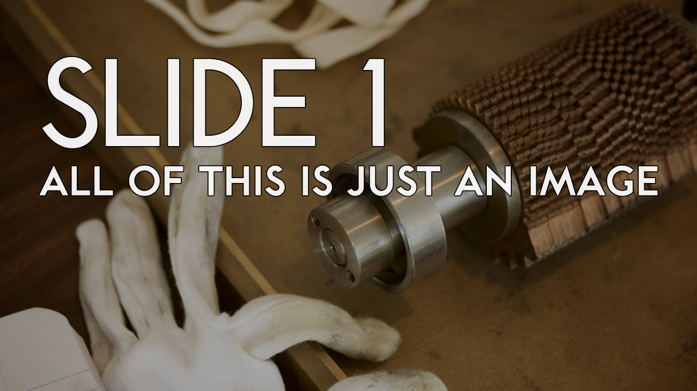
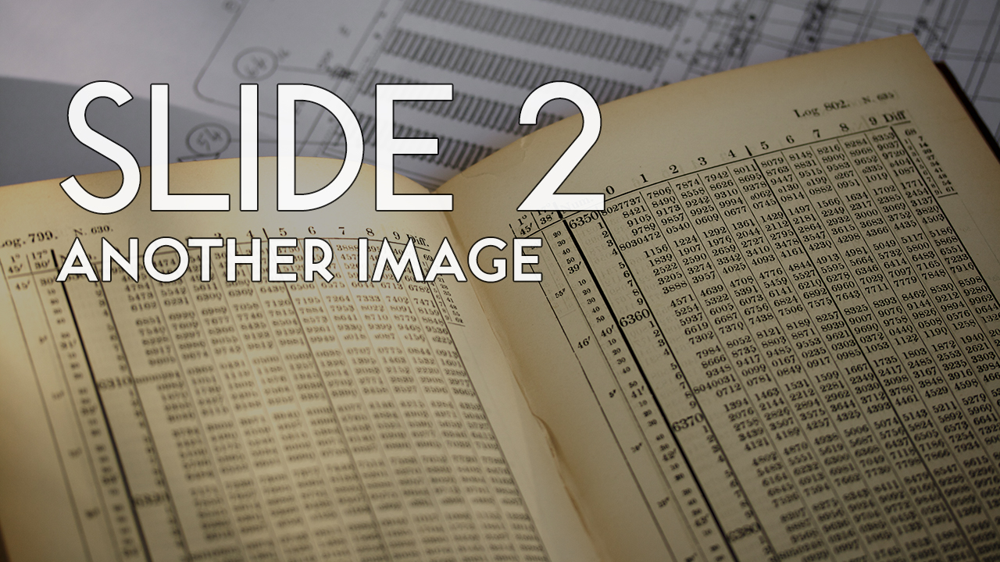
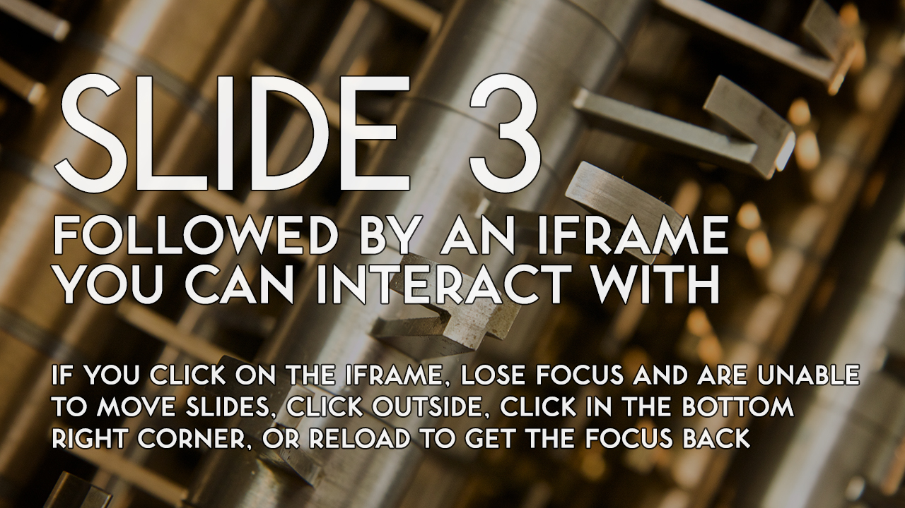
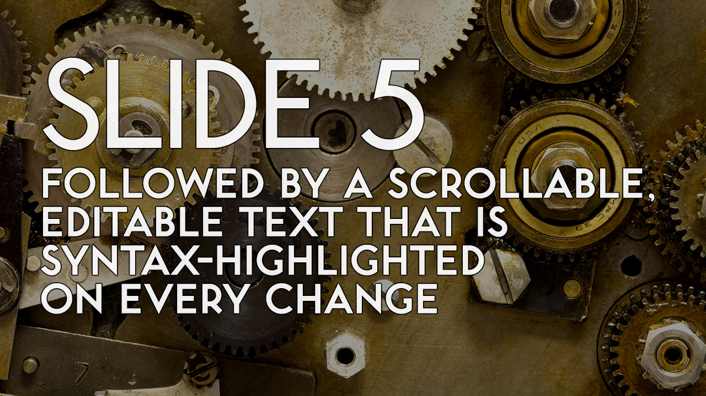
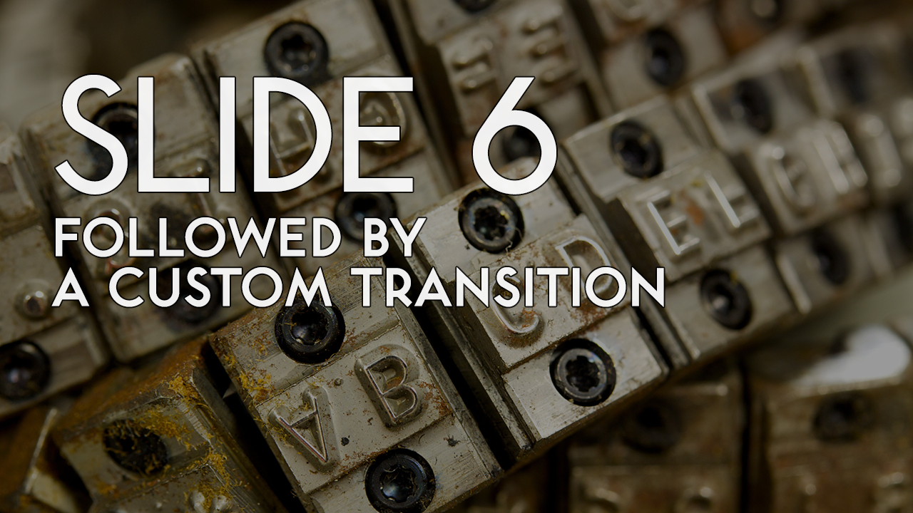
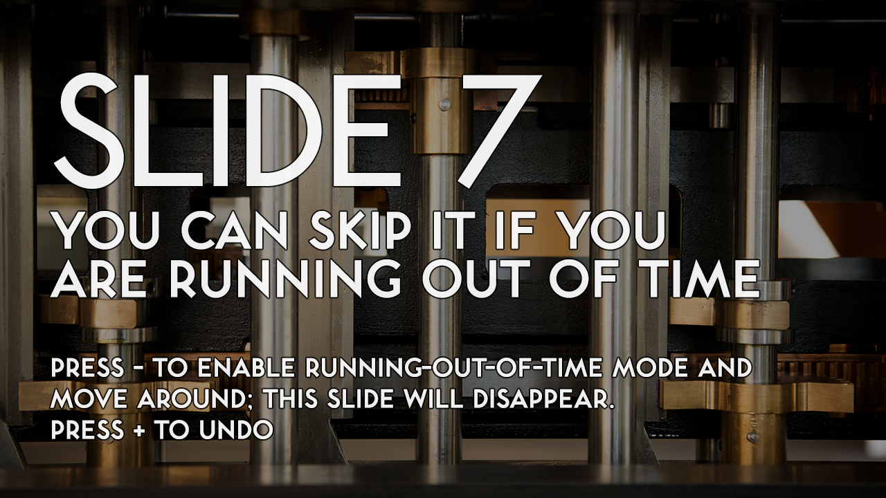
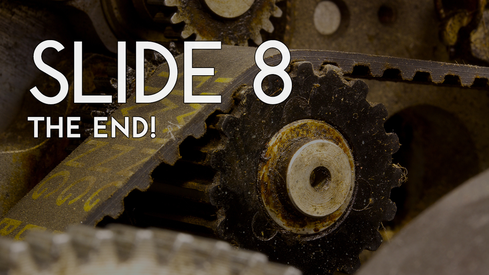

#include "nsXULAppAPI.h" #ifdef XP_WIN #include#include #endif #include #include #include "plstr.h" #include "prprf.h" #include "prenv.h" #include "nsCOMPtr.h" #include "nsILocalFile.h" #include "nsStringGlue.h" #ifdef XP_WIN // we want a wmain entry point #include "nsWindowsWMain.cpp" #endif static void Output(const char *fmt, ... ) { va_list ap; va_start(ap, fmt); #if defined(XP_WIN) && !MOZ_WINCONSOLE char msg[2048]; _vsnprintf(msg, sizeof(msg), fmt, ap); MessageBox(NULL, msg, "XULRunner", MB_OK | MB_ICONERROR); #else vfprintf(stderr, fmt, ap); #endif va_end(ap); }


